0
网络打不开 GitHub 怎么办
如果你的网络无法直接访问 GitHub，可以用 Watt Tools 加速工具。
下载地址： https://steampp.net/
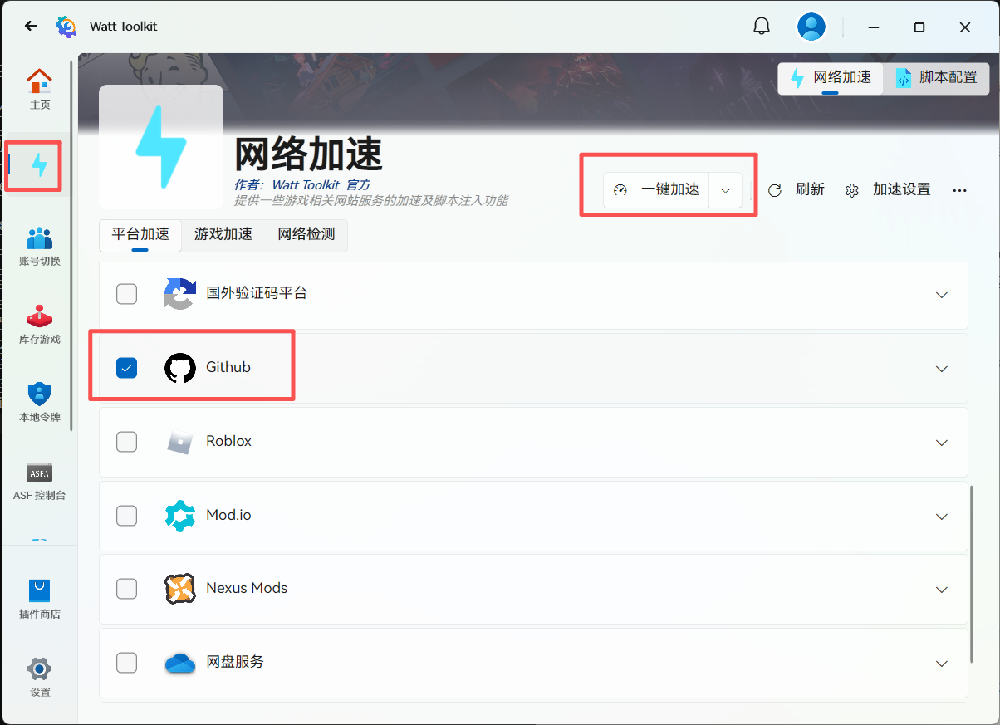
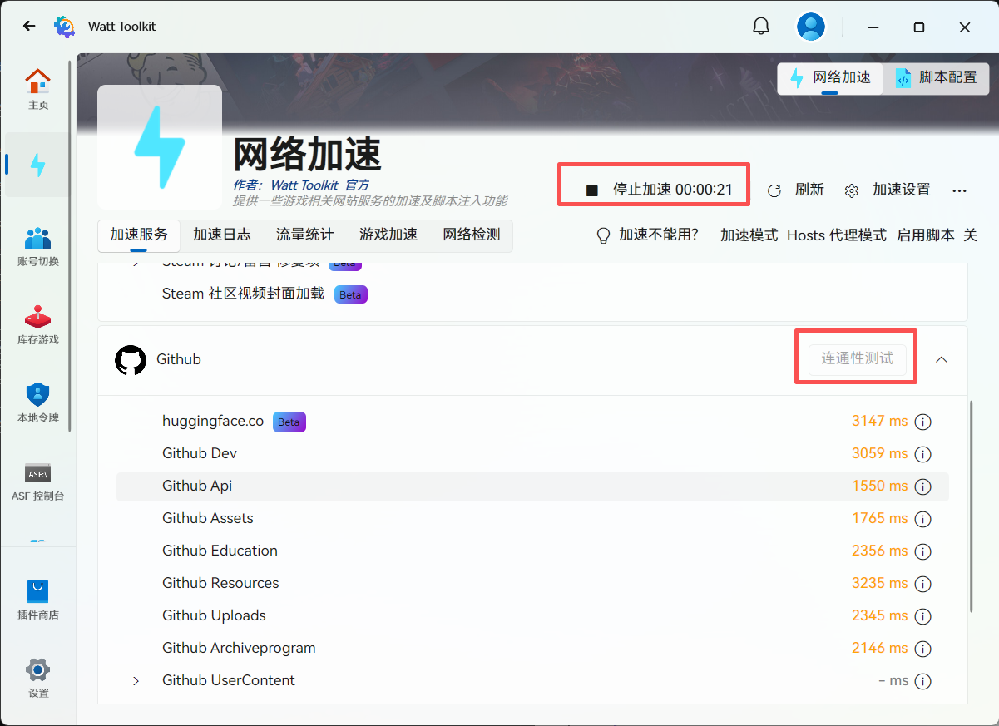
1
进入开发者设置
秘钥的入口藏得比较深，在设置页的最底下。
- 登录 GitHub 后，点击右上角头像
- 选择 Settings（账户设置）
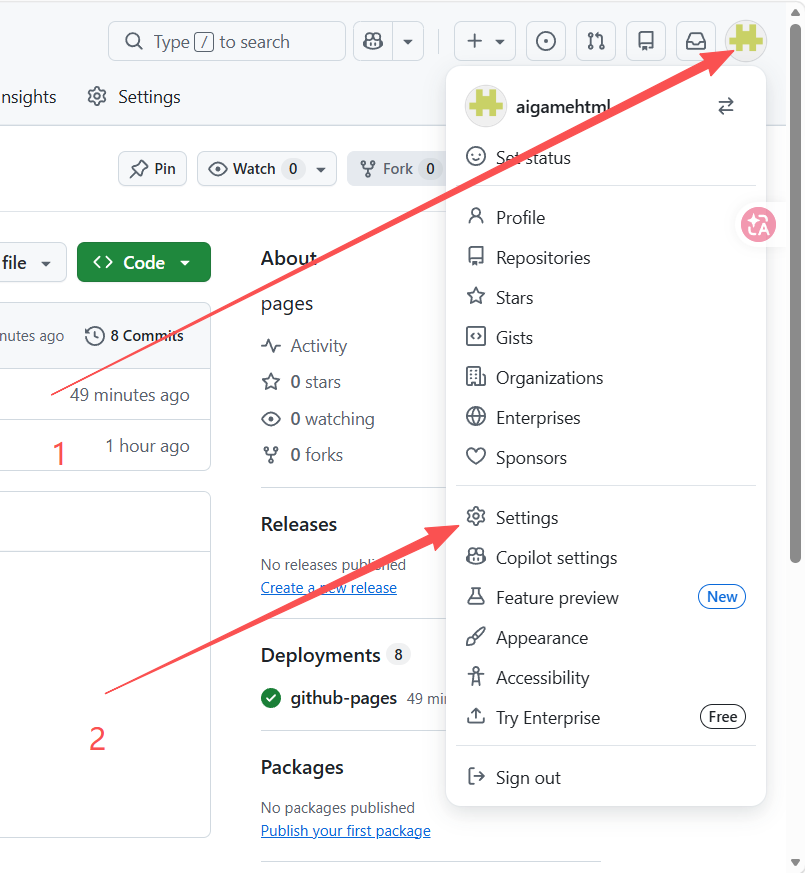
- 在左侧菜单栏最底部，点击 Developer settings
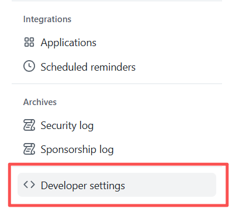
2
创建 Fine-grained Token
GitHub 有两种令牌，我们要的是权限更细的那种。
- 在左侧菜单选择 Personal access tokens
- 点击 Fine-grained tokens
- 点击 Generate new token
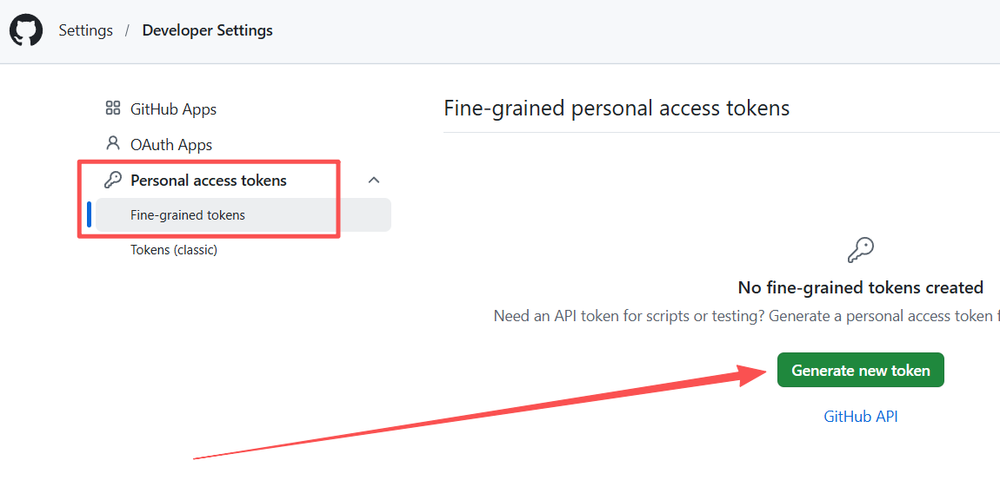
⚠️ 别选错
不要选成 Tokens (classic)。老式令牌权限太粗（一刀切给整个账号的读写）， 万一泄漏损失大。Fine-grained 能精确到「只读某个仓库的某类内容」。
3
配置 Token 信息
基本信息
- Token name：起个能认出来的名字，建议简洁明了，例如 ai-deploy-blog
- Description：用途说明，可选。写「用于 AI 部署网页」之类，日后好认
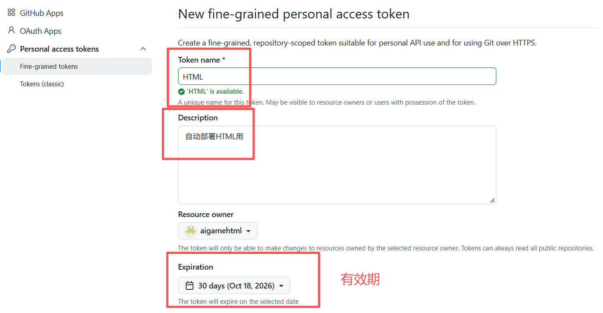
有效期
- 按需求选择：30 天 / 60 天 / 90 天或自定义
- 建议 90 天 —— 到期后重新生成一个即可。记得在日历上记一下，否则某天推送会突然被拒
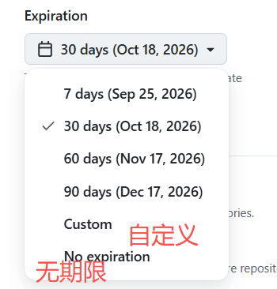
4
授权范围配置
这是整篇教程最关键的一步，决定这把钥匙能开哪扇门。
选择仓库访问范围
- 选 Only select repositories（仅授权特定仓库）
- 在下拉列表里勾选你需要访问的那个仓库
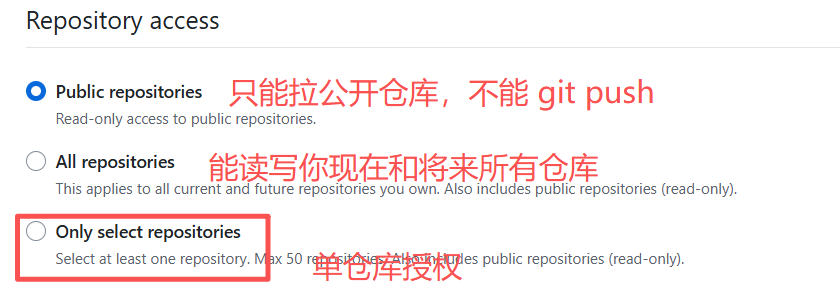
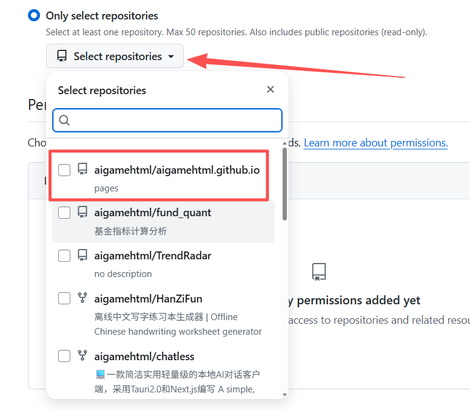
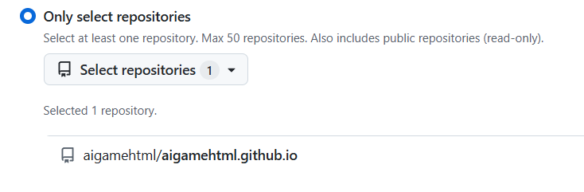
配置权限
- 展开 Repository permissions
- 找到 Contents 这一项
- 把权限设为 Read and write（读写）
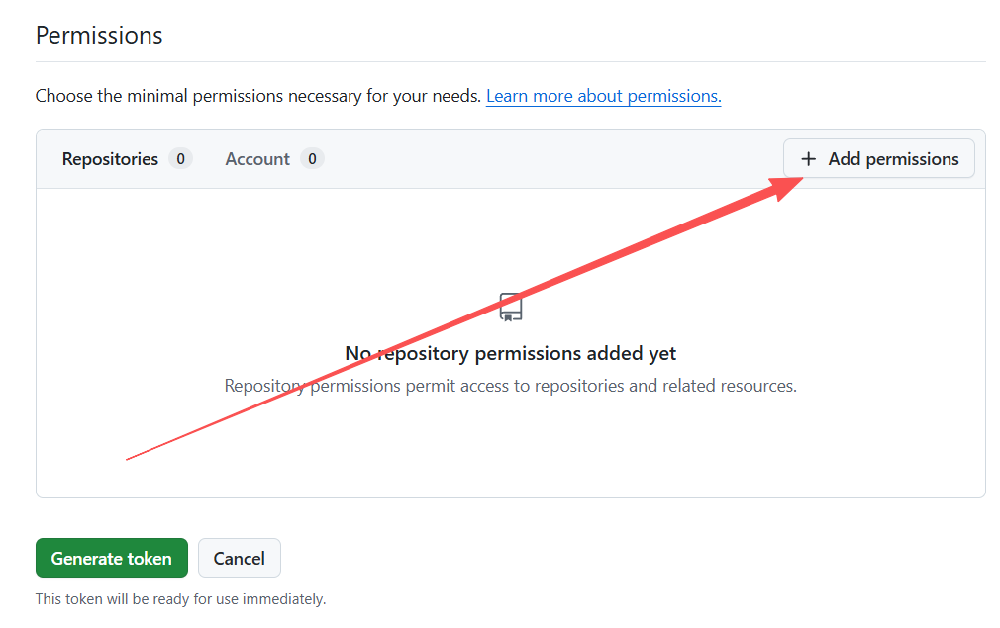
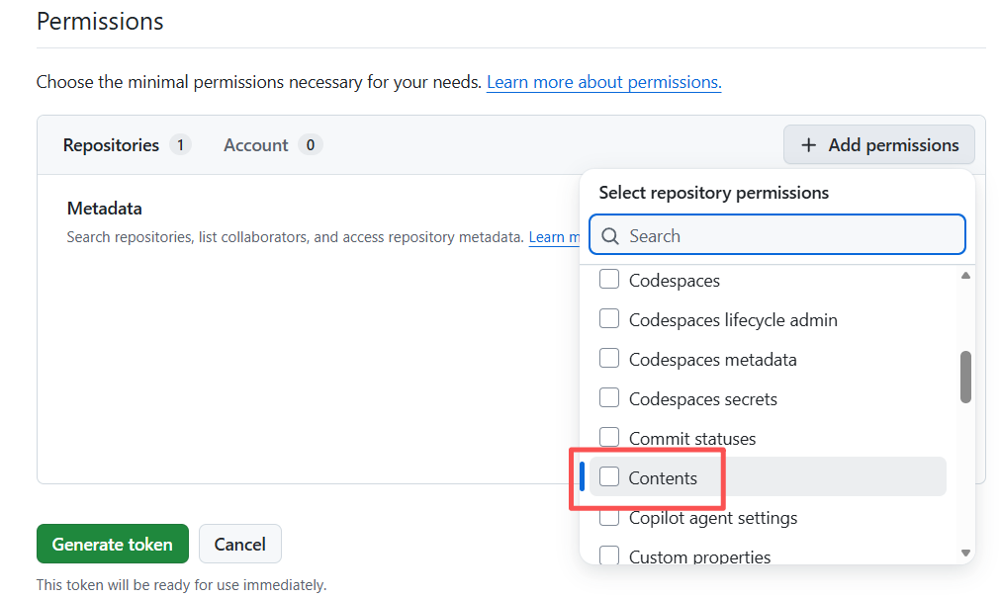
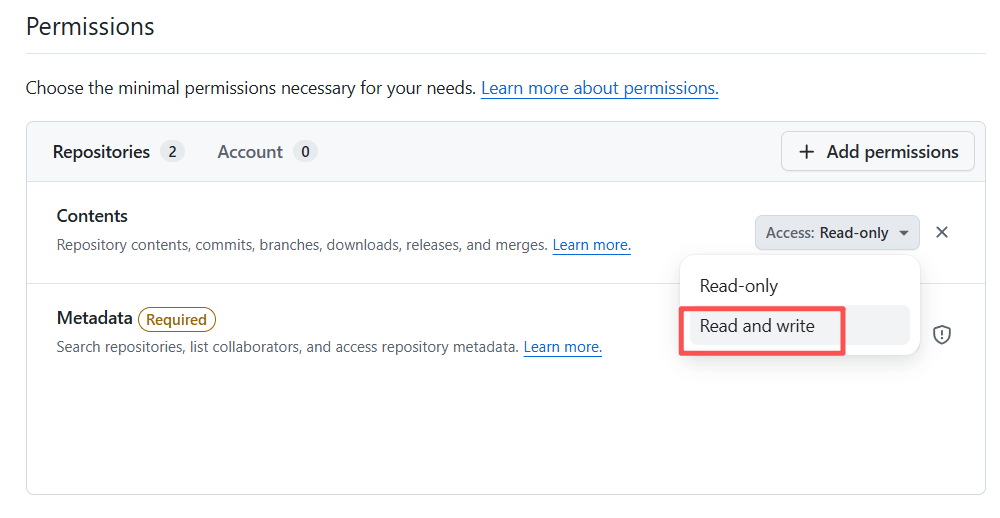
🔒 其他权限一律不动
除了 Contents，其余权限保持默认的 No access。 给得越少越安全 —— 这把钥匙只需要能往仓库里写文件，别的什么都不需要。
5
确认并生成
- 检查所有配置信息无误
- 点击 Generate token 确认
- 在弹窗中再次确认
- 系统会生成并显示 Token
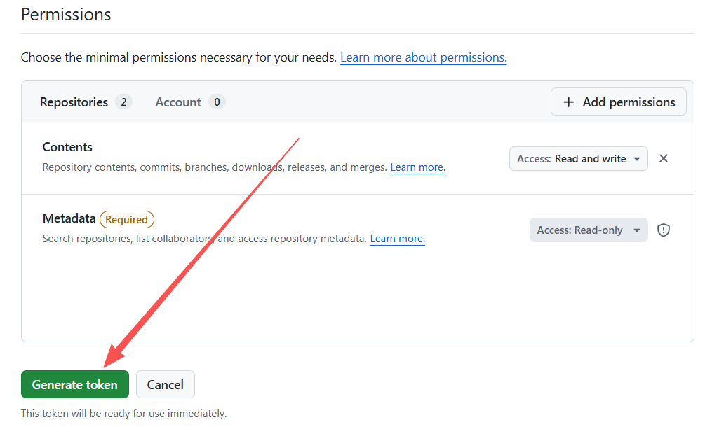
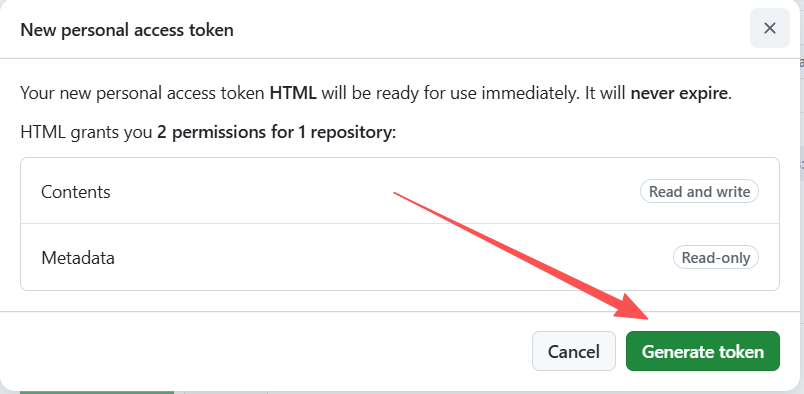
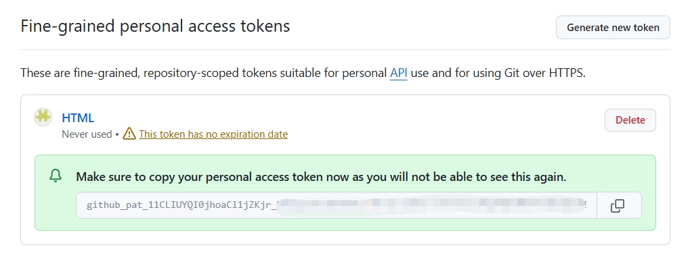
⚠️ 立即复制保存你的 Token！
- Token 只在生成时显示一次，刷新页面后就再也看不到
- 如果不慎丢失，只能删除旧 Token，重新生成一个新的
- 建议保存在安全的密码管理器里
✓
拿到之后怎么保管
复制到的这串字符（形如 github_pat_11ABC...）就是你的访问秘钥。 建议存成环境变量，而不是写在文件里 —— 文件容易被误传到网上。
Windows（PowerShell）
# 用户级环境变量，永久生效，无需管理员权限
[Environment]::SetEnvironmentVariable("GITHUB_PAGES_TOKEN","你的TOKEN","User")
macOS / Linux
echo 'export GITHUB_PAGES_TOKEN="你的TOKEN"' >> ~/.bashrc # zsh 改成 ~/.zshrc
chmod 600 ~/.bashrc
✓ 存好之后
把这个环境变量的名字（GITHUB_PAGES_TOKEN）告诉 AI，它就能读着这把钥匙帮你部署网页了。 你不需要把秘钥粘贴到聊天里。
安全提醒
- 不要把 Token 分享给他人
- 不要把它提交到代码仓库里
- 定期检查权限与有效期，到期前换新
- 想立即作废：去 GitHub → Developer settings 删掉那个 Token，马上失效